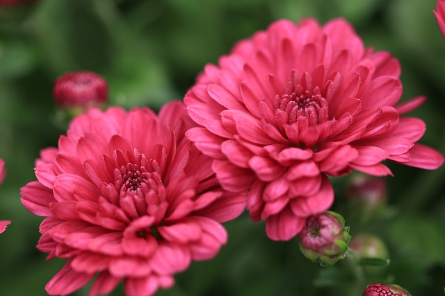

Gül , gülgiller (Rosaceae) familyasının Rosa cinsinden, odunsu çok yıllık kapalı tohumlu güzel kokulu bitki türlerine verilen addır.
Çoğu gül türünün ana vatanı Asya'dır.
Daha az sayıda türleri Avrupa, Kuzey Amerika ve Kuzeybatı Afrika'da yetişir.
Güller yaygın olarak güzellikleri ve kokuları için yetiştirilir ve
birçok toplumda kültürel öneme sahiptir.
Park ve bahçelerin süslenmesinde kullanıldığı gibi odaları, balkon ve terasları süsler. Birçok rengi vardır.
Gül çiçekçilikte çok talep edilen bir çiçektir.
LALE
Lale (Tulipa), zambakgiller (Liliaceae) familyasından Tulipa cinsini oluşturan güzel çiçekleri ile süs bitkisi olarak yetiştirilen,
soğanlı, çok yıllık otsu bitki türlerinin ortak adı.
Anavatanı Pamir, Hindukuş ve Tanrı dağlarıdır.
Türkler göçleri esnasında bu bitkinin soğanlarını Anadolu'ya getirmiştir.
1500'lü yıllarda Avrupa'ya Anadolu'dan giden lale özellikle Hollanda'da çok yaygındır.
Soğanlarının üzerinde zarımsı bir örtü bulunur. Etli ve yeşil 2-8 yaprağı vardır.
Çiçekler, saplar ucunda çoğunlukla bir, bazen ikidir.Kırmızı, sarı ve ara tonlarda renklere sahiptir.
16. yüzyılda Kanuni Sultan Süleyman tarafından Hollanda Kralı'na gönderilen laleler,
ilk başta Hollandalıları ve kısa zaman içerisinde tüm Avrupalıları hayranlık içinde bırakmışlardır.
Böylece günümüze kadar dünyanın en fazla lale üreten ülkesi Hollanda olmuştur.
KARANFİL
Karanfil, karanfilgiller Caryophyllaceae familyasının Dianthus cinsinden karşılıklı,
ensiz, sivri yapraklara sahip otsu çiçekli bitkilerin ortak adıdır.
Kuzey Afrika ve Güney Afrika'da birkaç tür ve Kuzey Amerika'nın kutup bölgesinde D. repens türü
olmak üzere esasen Avrupa ve Asya'ya özgü yerel bitkidir.
PAPATYA
Latince adı ‘Chamomillae Romanae’ olan Papatya, papatyagiller familyasındandır. Dünyanın en kalabalık çiçekli bitkiler familyasıdır.
Sadece Türkiye’de 1156’dan fazla türü bulunur. Anavatanı Avrupa’dır. Tüm Avrupa’dan Hazar kıyılarına kadar yayılmıştır.
Günümüzde buzullarla kaplı Antarktika kıtası dışında her coğrafyada yayılım göstermiştir.
Ülkemizde Marmara, Ege, Trakya, Güneybatı Anadolu’da doğal koşullarda yetişir.
Mayıs ve Ağustos ayları arasında zarafeti temsil eden beyaz renkte çiçekler açan tek yıllık otsu bir bitkidir.
MENEKEŞE
Menekşe, menekşegiller (Violaceae) familyasına bağlı Viola cinsini oluşturan çoğunlukla saksılarda yetiştirilen bitki türlerinin ortak adı.
400 ile 500 arası türü bulunmaktadır. Dünyanın birçok yerinde yetişebilmekle beraber en çok kuzey yarımkürede yetişir.
Ayrıca Hawai ve Güneydoğu Asya'da da yetişebilir. Doğada aydınlık, fakat gölgede ve nemli bölgelerde yetişir.
İRİS FURCATA
İris furcata, doğal olarak Kafkas Dağları, Lazistan, Moldova ve güney Ukrayna'da yetişen İris cinsinden çok yıllık bir bitki türüdür.
Kısa, dar, kılıç şeklinde yaprakları vardır. Çiçekleri mor, koyu mor, mavi-mor, açık mavi veya menekşe rengidir.
Ilıman bölgelerde süs bitkisi olarak yetiştirilir. İlk kez Friedrich August Marschall von Bieberstein tarafından tanımlanmıştır.
Tür, Yaşam Ansiklopedisi'nde listelenmiştir.
KASIMPATI

Kasımpatı (Chrysanthemum) ya da krizantem, yaklaşık 30 tür barındıran, papatyagiller (Asteraceae) familyasına bağlı bir cinstir.
Asya ve kuzeydoğu Avrupa'ya yerlidir.
Otsu, yıllık bitkiler olan kasımpatı türleri, yaklaşık 50–150 cm yüksekliğindedirler.
Büyük çiçek başlarına sahiptirler, yabanileri beyaz, sarı veya pembe renkler gösterir.
Kasımpatı türleri bazı Lepidoptera türlerinin larvaları tarafından yiyecek olarak tüketilir.
SÜMBÜL
Sümbül, Hyacinthus cinsine ait soğanlı bitkilerden olup daha önce zambakgiller (Liliaceae)
familyasının üyesi olarak kabul edilmekte iken şimdi yeni bir familya olan Hyacinthaceae altında incelenmektedir.
Sümbüllerin anayurdunu doğuda İran ve Türkmenistan'a kadar dağılım gösteren doğu Akdeniz bölgesi oluşturmaktadır.
Hyacinthus, Yunan mitolojisinde Sparta Kralı'nın genç oğlu olup yeniden doğuşu simgelemektedir.
ZAMBAK
Zambak veya gerçek zambak (Lilium), zambakgiller (Liliaceae) familyasının çiçek soğanıyla yetişen, hepsi büyük belirgin çiçekli,
otsu çiçekli bitkilerin bir cinsidir. Zambakgiller familyasında bu cinsin 110 civarı bitki türü vardır.
Zambaklar, kültürde ve dünyanın birçok yerinde edebiyatta önemli bir çiçekli bitki grubudur.
Türlerin çoğu ılıman kuzey yarım küreye özgüdür ancak yayılım alanları kuzey alttropiklere kadar uzanır.
Diğer birçok bitkinin ortak adında "zambak" (İng.: lily) vardır ancak onlar gerçek zambaklarla akraba değildir.
Genellikle bahçe ve süs bitkisi olarak kullanılır, bazı soğanlı türleri ve zambak çiçekleri kimi ülke mutfaklarında besin olarak tüketilir.
LEYLAK
Leylak (Syringa vulgaris), zeytingiller (Oleaceae) familyasından dik çalı veya 5–6 m boyunda ufak bir ağaç görünümündeki leylak türü.
Genç sürgünler düzgün, gri veya zeytuni yeşil, önceleri kısa tüylü, sonraları çıplaktır.
Yapraklar yumurta veya geniş yumurta biçiminde, yuvarlakça, sivri uçlu, üst yüzü koyu, alt yüzü mat ve tüysüzdür.
Anavatanı Güney Avrupa ile Batı Asya'dır. Uzun zaman önce kültüre alınmıştır.
Bugün dünyanın en popüler süs bitkisidir. Çiçeklerinin rengi beyaz, mavimsi, kırmızımsı-menekşe olan yapıları basit veya katmerli çok sayıda bahçe formu vardır.
PLUMERİA
Plumeria Apocynaceae familyasına bağlı bir cinstir.Anavatanı Meksika’dan Brezilya’ya kadar olan Orta Amerika civarıdır.
Plumeria; ilkbahar aylarından itibaren çok çeşitli renklerde çiçekler açar. Amerika’nın keşfinin ardından Plumeria, tüm dünyaya yayılmıştır.
Özellikle Budist ve Hindu tapınaklarında çok yoğun biçimde kullanılır. Bu nedenle bitkiye Hint mabet çiçeği de denmektedir.
Bunun yanı sıra mübarek zakkum, fitne ağacı gibi isimleri de vardır. Hawai’de çok fazla yetiştirildiği için bu bölgeyle özdeşleştirilmiştir.
Havaililer, misafir karşılarken kullandıkları çiçek kolyelerinde plumeriada yer alır.